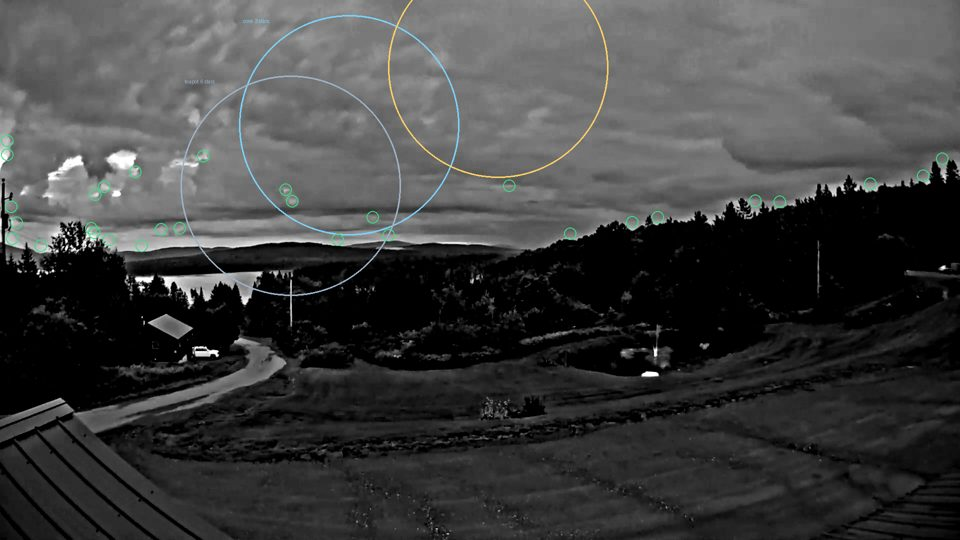
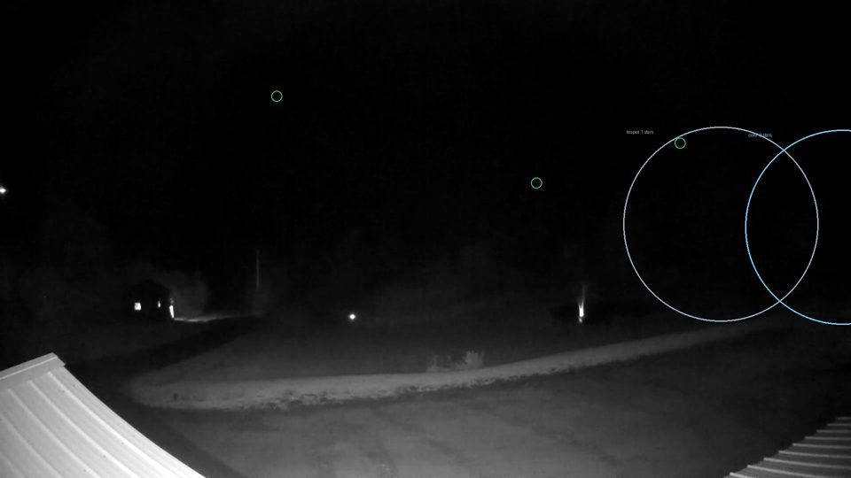
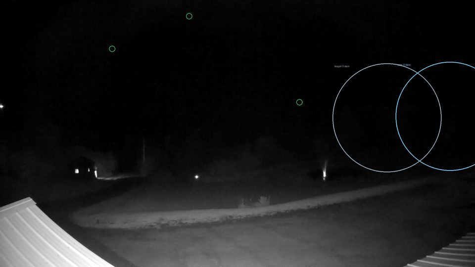
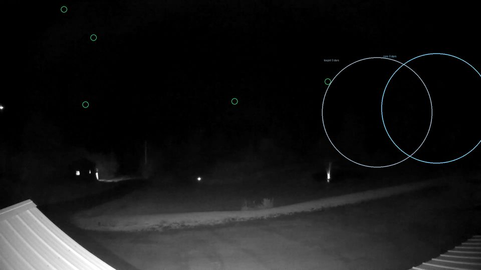
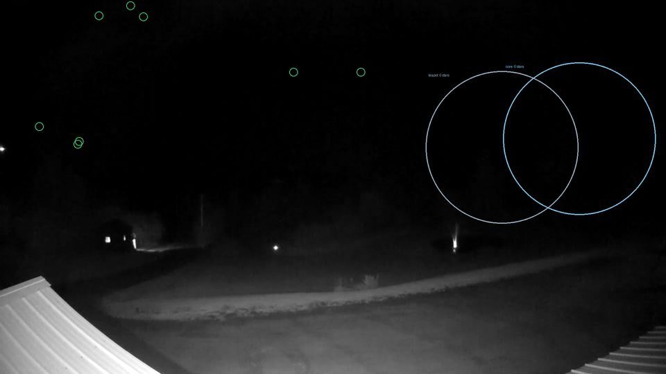
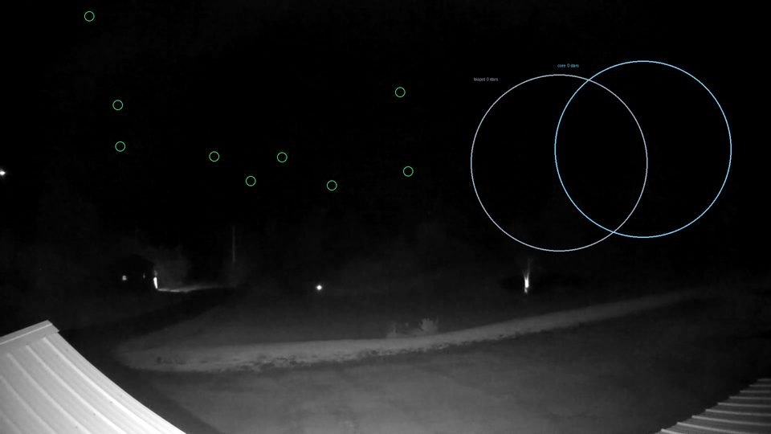

The webcam at Lopstick was plate-solved from its own stars: bearing 178.5°,
94° wide, pitched 3° below level. Every target of this trip falls inside that frame —
the Milky Way core, Rho Ophiuchi, M8 and M20 — at the same low southern altitudes you
will be shooting them at, from 16.6 km away.
So this is not a cloud proxy. A star either shows through or it does not. It also covers
the case the satellite handles worst: infrared struggles with low cloud whose tops sit near
ground temperature, and low cloud is exactly what blocks a target at 16°.
3stars in the core region · Sat 20:00
Flux 51,482 · brightest source
15× the noise · core at
13.5° altitude
One bar per capture, height is light collected in the core region.
Click a bar to jump to that frame.
Why flux and not just a count
A star count depends on where the detection threshold lands, and the stack noise moves
between captures. Two grabs two minutes apart gave 15 sources and then 5 — not because the
sky changed, but because σ went from 0.78 to 0.88 and the 6σ cut moved with it. Flux is the
total light collected and does not care where a threshold sits, so it is the number to
compare across captures and across nights.
The star counts depend on a plate solve — bearing 178.5°, 94° wide, pitched 3° below
level — and every number here rests on it, so it is worth showing rather than asserting.
Measured against catalogue positions across every capture:
star
mag
alt
matches
mean error
range
Dschubba
+2.29
16°
2
10 px
3–18
Alnasl
+2.98
14°
1
10 px
10–10
Sigma Sco
+2.88
15°
3
12 px
3–24
Antares
+1.06
12°
1
21 px
21–21
Mu Sco
+3.00
4°
1
24 px
24–24
Sabik
+2.43
27°
2
29 px
27–30
Kaus Bor
+2.81
19°
1
47 px
47–47
Nunki
+2.05
19°
1
49 px
49–49
Theta Oph
+3.27
19°
3
49 px
33–76
Lesath
+2.69
7°
1
56 px
56–56
Eta Sgr
+3.11
8°
4
70 px
60–79
Confident matches — stars brighter than magnitude 2.95, where the
pairing is unambiguous — sit at 26 px mean error, about
1.7° at this plate scale. Fainter stars show larger residuals, but those are almost
certainly mispairings rather than a bad solve: at an 80 px search radius a faint catalogue
star will find something. Error does not grow toward the frame edge
(correlation −0.71), so this is not lens distortion.
A 26 px pointing error is about a fifth of the 220 px aperture
radius. Flux is unaffected; naming an individual star is not, which is why the headline
number is flux and the star count is shown as supporting detail.
The frames
Each is a median stack of the 30 least-compressed frames from a 30-second grab at 1080p,
stretched so faint stars are visible, masked to sky only. Newest first.

Sat 08 Aug · 20:00 core 3 stars · flux 51,482 · peak 15× · alt 13.5° rho 0 stars · flux 19,640 · peak 9× teapot 6 stars · flux 114,694 30 of 60 frames stacked · noise σ 2.62 · 40 sources in sky

Sat 08 Aug · 01:00 core 0 stars · flux 260 · peak 4× · alt 1.3° rho 0 stars · flux 0 · peak 0× teapot 1 stars · flux 905 30 of 60 frames stacked · noise σ 0.83 · 3 sources in sky

Sat 08 Aug · 00:45 core 0 stars · flux 345 · peak 6× · alt 3.1° rho 0 stars · flux 0 · peak 0× teapot 0 stars · flux 1,616 30 of 60 frames stacked · noise σ 0.87 · 3 sources in sky

Sat 08 Aug · 00:30 core 0 stars · flux 311 · peak 7× · alt 4.8° rho 0 stars · flux 0 · peak 0× teapot 0 stars · flux 545 30 of 60 frames stacked · noise σ 0.69 · 5 sources in sky

Sat 08 Aug · 00:15 core 0 stars · flux 691 · peak 7× · alt 6.5° rho 0 stars · flux 0 · peak 0× teapot 0 stars · flux 849 30 of 60 frames stacked · noise σ 0.67 · 8 sources in sky

Sat 08 Aug · 00:00 core 0 stars · flux 569 · peak 6× · alt 8.0° rho 0 stars · flux 0 · peak 0× teapot 0 stars · flux 830 30 of 60 frames stacked · noise σ 0.68 · 9 sources in sky